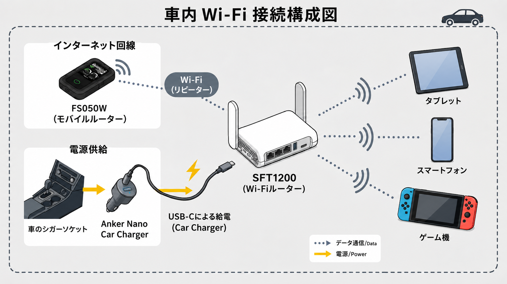

車内をWi-Fi環境にしたい
旅行などで車で長距離移動する時、皆で使えるWi-Fiがあったら便利ですよね。
ここでは車の中をWi-Fi環境にして、快適にインターネットが使える方法を紹介します。
例えば…
車内をWi-Fi環境にする方法はいくつかあります。
手軽なのは、FS050Wのようにバッテリーレスでも動作できるモバイルルーターや、USBモデムなどを車内で使用する方法です。
私の場合は、FS050Wをそのまま使用したり、SFT1200を車内に常設してFS050Wやスマートフォンの通信を利用したりしています。
長距離ドライブでは普段持ち歩いているMT3600BEを車内でも使用しています。
何が便利なの？
車内の機器をまとめてインターネットに接続できる
車内にWi-Fi環境があれば、iPadやゲーム機など、モバイル回線を持たない機器でもインターネットを利用できます。
長距離の移動中に動画を見たり、音楽を聴いたりするときにも便利です。
小さい子どもがいる家庭では、親のスマートフォンを貸す代わりに、子ども用にフィルタリング設定をしたWi-Fi専用のタブレットで動画を視聴させる、といった使い方もできます。
スマホのテザリングによるバッテリーの消耗を避けられる
スマホのテザリングでも十分ですが、バッテリーの消耗が気になります。
特に、長距離ドライブのときはできるだけバッテリーの消耗を抑えたいものです。
車から給電するモバイルルーターなどを利用すれば、スマホのバッテリーを消耗せずに車内Wi-Fiを利用できます。
また、エンジンをかけると自動的に起動するようにしておけば、乗るたびにテザリングをON/OFFする手間もありません。
使っているもの
GL.iNet SFT1200 (Opal)
車内のWi-Fiルーターとして使用しています。
スペックは以下を参照。
| Wi-Fi | Wi-Fi 5（デュアルバンド） |
|---|---|
| Wi-Fi速度 | 2.4GHz：最大300Mbps 5GHz：最大867Mbps |
| 有線LAN | 1Gbps × 3ポート（WAN × 1、LAN × 2） |
| USB | USB 2.0 × 1 |
| 電源 | USB Type-C（5V/3A） |
| 接続台数 | 最大52台 |
| VPN | WireGuard：最大65Mbps OpenVPN：最大12Mbps |
| サイズ・重量 | 118 × 85 × 30mm / 145g |
富士ソフト +F FS050W
この製品を単体で使う方がシンプルでいいです。
しかし、今回はこのFS050Wをリピーター接続で使う方法を紹介します。
Anker Nano Car Charger (75W, 巻取り式 USB-Cケーブル)
シガーソケットから電源を取るためのカーチャージャーです。
カーチャージャーは、接続する機器に必要な出力だけでなく、車側のアクセサリーソケットの定格も考えて選ぶ必要があります。
私は130Wクラスの製品も検討しましたが、車側の定格を超える使い方を避けるため、最大75Wの製品を選びました。
スペックは以下を参照。
| 入力 | 12V / 8A、24V / 4A |
|---|---|
| 合計最大出力 | 75W |
| 巻取り式USB-Cケーブル | 最大45W |
| USB-Cポート | 最大30W |
| ケーブル | 巻取り式USB-Cケーブル（約70cm） |
| サイズ | 約100 × 50 × 29mm |
| 重量 | 約77g |
実際の使用例
普段は、SFT1200とFS050Wを組み合わせて車内Wi-Fiとして使用しています。
構成は次のようになっています。

SFT1200を車内Wi-Fiとして使用する
普段はSFT1200を車内に置き、シガーソケットから電源を取って使用しています。
車のエンジンをかけるとSFT1200にも電源が入り、自動的にWi-Fiが使えるようになります。
車内で使用する機器は、あらかじめSFT1200のWi-Fiに接続するよう設定しているため、乗るたびに設定する必要がありません。
FS050Wのモバイル回線を利用する
FT1200自体にはモバイル回線へ接続する機能がないため、インターネット回線にはFS050Wを利用しています。
SFT1200をFS050WのWi-Fiへリピーター接続することで、SFT1200に接続したiPadなどからインターネットを利用できます。
リピーター接続についてはコチラを参照。
FS050Wだけで使用することもある
車内Wi-Fiを利用するだけであれば、SFT1200を使わず、FS050WへiPadなどを直接接続することもできます。
FS050Wはバッテリーを取り外した状態でもUSB給電で使用できるため、車内に置いてエンジン始動で起動できます。
ほとんどの場合、こちらの方が実用的だと思います。
それでもSFT1200を使っている理由
FS050Wだけで車内Wi-Fiを利用できるのにSFT1200を使っているのは、手軽に使えるからです。
私はFS050Wを普段から持ち歩いているため、車内には常設していません。
また、FS050Wはあくまでもモデムとして利用しているため、スマホなどと自動接続設定をしていません。
そうなると、短距離の運転では、乗るたびにFS050Wを取り出して接続するのは少し面倒です。
そこで、余っていたSFT1200を車内に常設し、エンジンをかけると自動的に起動する車内Wi-Fiとして利用しています。
長距離ドライブではMT3600BEを使用する
一方、長距離ドライブでは、普段持ち歩いているMT3600BEを使用しています。
MT3600BEにはシガーソケットから給電し、FS050WとはUSBテザリングで接続します。
FS050WをWi-Fiで使用するとバッテリーを消費するため、長時間使用するときはUSBテザリングを利用しています。
注意点・うまくいかなかったこと
FS050WはバッテリーレスではUSBテザリングを利用できない
FS050Wはバッテリーを取り外した状態でもUSB給電で使用できますが、バッテリーレスで使用する場合はUSBテザリングや有線LANを利用できません。
そのため、MT3600BEとUSBテザリングで接続するときは、FS050Wにバッテリーを取り付けて使用する必要があります。
夏場の車内温度に注意
バッテリーが搭載されていないルーターは、車に常設しやすいですが、夏場は気をつけたい。
GL.iNetの製品の場合、メーカーが示している保管温度は-20℃～70℃です。
また、FS050Wをバッテリーレスで使用する場合でも、本体の保管温度は-20℃～60℃とされています。
夏場の車内は高温になるため、バッテリーを搭載していない機器であっても、
直射日光が当たる場所を避けるなど、設置場所には注意が必要です。